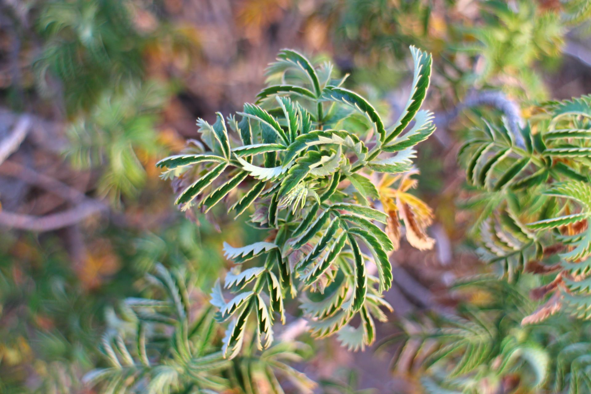
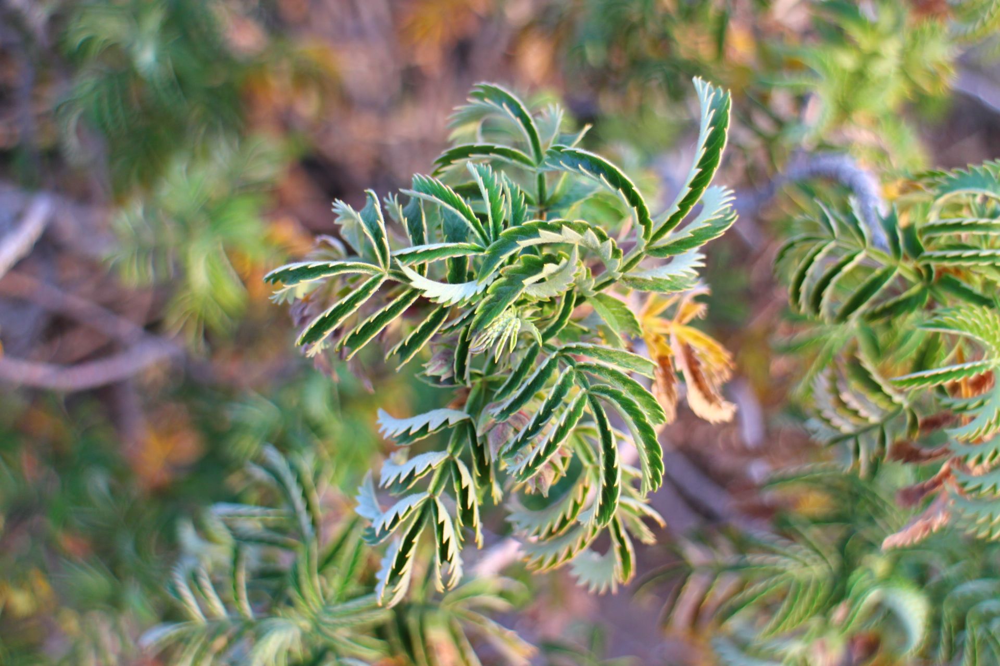

Från böna till kopp
Här till vänster är en samling användbara länkar för att lära dig mer om kaffe.
Från böna till kopp - ett kaffeinitiativ
 En sida om kaffe
En sida om kaffe
Här till vänster är en samling användbara länkar för att lära dig mer om kaffe.
